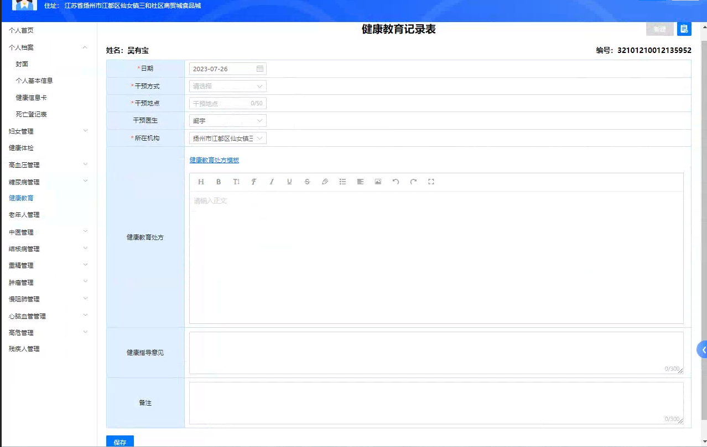

1.干预方式：增加【门诊诊疗】，HIS和云医来的数据直接归为该类
2.干预地点：HIS和云医来的数据，可直接将科室纳入干预地点
3.健康教育处方：禁用，直接展示模板代入的信息
3.备注：HIS和云医来的数据，可直接将诊断纳入备注
4.门诊和HIS的宣教信息打印后方可触发接口，进行数据传输
5.同一个居民，同一模板，同一天只会有一条数据
5.在x时间内，同一数据源同一个机构同一个医生同一个居民同一个健康宣教，在个体化宣教记录增加时只增加一条（x可配置，单位天）
5.在x时间内，同一数据源同一个机构同一个医生同一个居民同一个健康宣教，在健康宣教统计时只计数一次，存储时段内第一次（x可配置，单位天）
